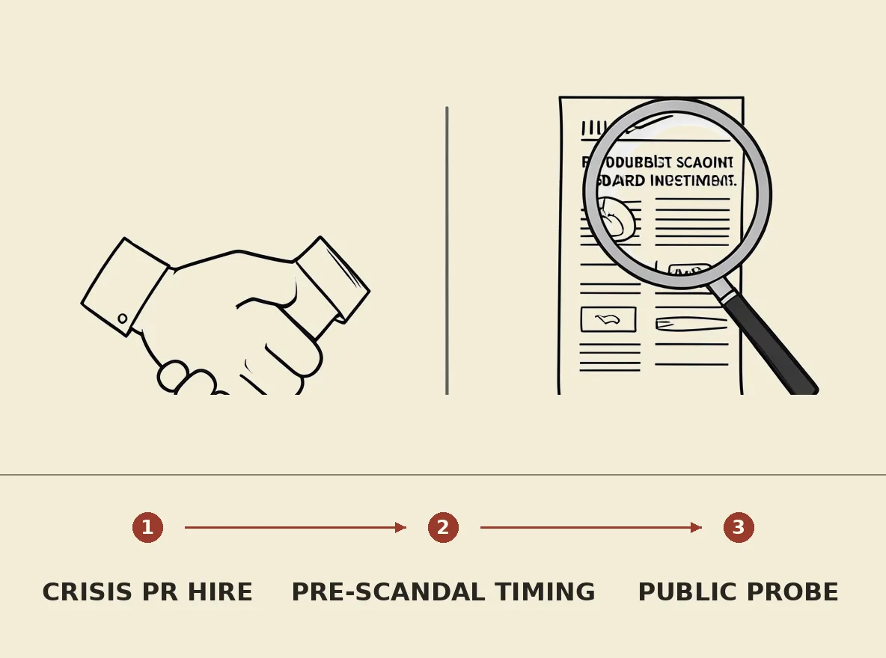

Nvidia CEO Jensen Huang reportedly hired Heller Inc., a crisis communications firm specializing in high-profile sex scandals, over a year ago. This engagement occurred before Huang publicly admitted to an extramarital affair with a woman suspected of spying for China, and around the time reports emerged about Nvidia's potential role in helping Chinese companies bypass U.S. chip export restrictions. The early hiring of such a firm suggests a pre-emptive strategy to manage personal and corporate reputational risks, now under scrutiny as Nvidia's board investigates potential foreign intelligence efforts targeting Huang.